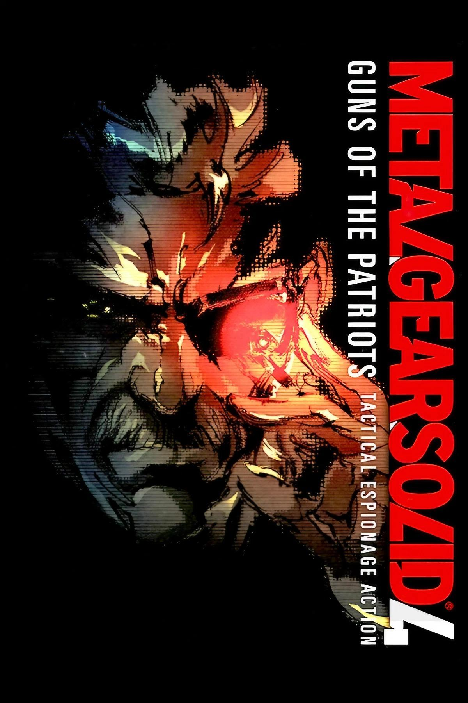

El año 2014. Las guerras son ahora administradas por el sistema IA de los Patriots. Los soldados están equipados con nanomáquinas que regulan su desempeño en combate. Solid Snake —ahora "Old Snake"— padece un envejecimiento acelerado como consecuencia de ser un clon.
La misión: eliminar a Liquid Ocelot, que ha tomado el control de los ejércitos privados usando el Sólido Genotipo de Solid Snake. Snake recorre cinco actos en zonas de conflicto internacionales (Oriente Medio, América Latina, Europa Oriental, Shadow Moses) hasta el enfrentamiento final en el Outer Haven.
El desenlace resuelve la historia de todos los personajes clave: Snake, Big Boss, Ocelot, Raiden, Eva, Naomi, Roy Campbell y Meryl.
Envejecido y enfermo. Su cuerpo se degrada en cada misión. La última leyenda del campo de batalla.
Ocelot con la personalidad de Liquid Snake. Su plan a largo plazo sacude todo lo que el jugador creyó entender.
Ahora un cyborg de combate que salva a Snake en los momentos más críticos.
Traficante de armas que asiste a Snake y provee el sistema de compra de armas del juego.
El retorno del padre. Su aparición en la escena final es uno de los momentos más impactantes de la saga.
Regresa para ayudar a Snake a encontrar una cura al envejecimiento acelerado.
MGS4 es el juego más cinematográfico de la saga. Sus 5 actos tienen estéticas y mecánicas distintas.
Traje que imita automáticamente la textura del entorno en tiempo real para un camuflaje perfecto.
Sistema de comercio de armas en tiempo real. Las armas bloqueadas por nanomáquinas se desbloquean con puntos Drebin.
Oriente Medio, selva sudamericana, Europa del Este, Shadow Moses y el Outer Haven tienen gameplay diferenciado.
Los Beauty and the Beast Corps tienen combates multi-fase ambientados en distintos escenarios globales.
Recibió críticas casi perfectas. Varios outlets le dieron 10/10 y Game of the Year 2008. Fue el argumento para comprar PS3 más poderoso del año. Sus cinemáticas superan la hora por episodio, algo nunca visto antes.
El final emotivo de Solid Snake y el monólogo de "Wars have changed" se convierten en iconos de la narrativa de videojuegos del siglo XXI.
💀 El juego tiene más de 8 horas de cinemáticas, haciendo que en muchos momentos se sienta más como una película interactiva.
🎮 La misión de infiltración en Shadow Moses es un homenaje directo a MGS1, con la misma música y zonas recreadas en PS3.
👤 La revelación final del plan de Ocelot recontextualiza todo lo que el jugador creyó saber desde MGS1 sobre su rol.
🤜 La pelea de puños final entre Snake y Liquid Ocelot, sin armas, es un clímax emocional diseñado para hacer llorar al jugador.